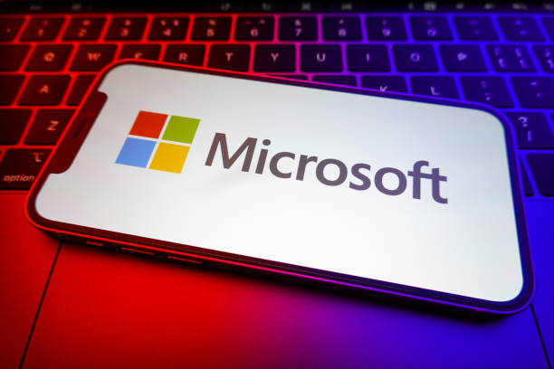

Microsoft conclui aquisição da Activision Blizzard após quase 2 anos
Aquisição é concluída 1 ano de 10 meses depois do seu anúncio; Microsoft pagou US$ 68,7 bilhões pela compra da Activision Blizzard

A Microsoft concluiu nesta sexta-feira (13) a aquisição da Activision Blizzard. Agora, grandes títulos como Call of Duty, Diablo, World of Warcraft e Candy Crush integram o portfólio de jogos da Big Tech. Com o fim da aquisição, que custou US$ 68,7 bilhões, a Microsoft se prepara para lançar novos jogos no Xbox Game Pass.
O fechamento da compra era especulado para essa data desde a última semana, quando o site The Verge divulgou que a Microsoft esperava a aprovação do negócio na CMA, órgão do Reino Unido parecido com o nosso CADE, após mudanças no contrato de compra. A aprovação da CMA quando era madrugada no Brasil.
Microsoft levará jogos da Activision Blizzard para o Game Pass
Com a aquisição da Activision Blizzard concluída pela Microsoft, a big tech inicia a preparação para levar os títulos da subsidiária para o Game Pass, seu serviço de assinatura de jogos. No entanto, não espere que os títulos entrem amanhã no Game Pass.
A própria Activision Blizzard declarou na última segunda-feira que seus jogos devem entrar no Game Pass apenas a partir de 2024. A companhia disse que iniciaria o trabalho de levar os jogos para o serviço assim que a aquisição fosse finalizada.
Esse processo exige contato direto com a Xbox Game Studios — divisão de jogos da Microsoft da qual agora a Activision Blizzard é uma de suas subsidiárias. No comunicado, a big tech confirma que já iniciou as etapas para levar os títulos para o Game Pass.
Como mostrou o leaker Klobrille no X/Twitter, a Activision, Blizzard e King (desenvolvedora de títulos mobile) serão, assim como a Bethesda, estúdios independentes dentro da Xbox Game Studios.
Xbox Game Studios e sua nova estrutura após aquisição da Activision Blizzard (Imagem: Reprodução/Klobrille)
Xbox Game Studios e sua nova estrutura após aquisição da Activision Blizzard (Imagem: Reprodução/Klobrille)
Com o fim da aquisição da Activision Blizzard + King, a Microsoft se torna, no quesito receita, a terceira a maior companhia de jogos do mundo. Na liderança está a chinesa Tencent, seguida da Sony.